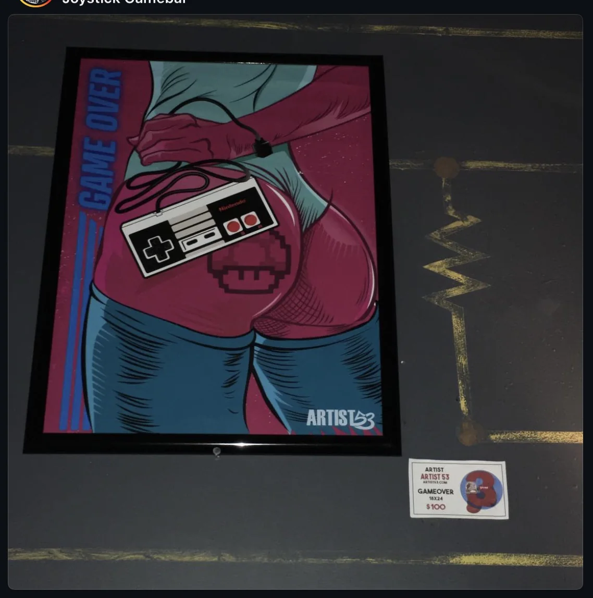
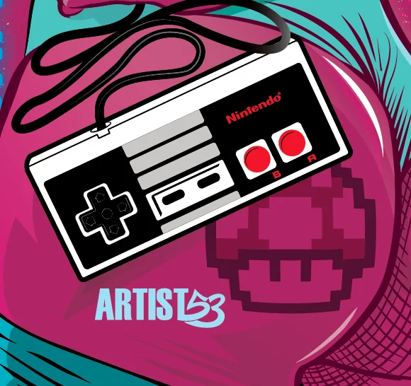

Illustration • Exhibition Piece
Game Over
My piece from the 95th Street Tacos 3 Year Anniversary Show in Atlanta. The show had a video game theme, so I created Game Over for the event.

Project Overview
Game Over
Game Over is an 18 × 24 illustration created for the 95th Street Tacos anniversary art show. The piece was displayed at Joystick Gamebar in Atlanta.
At The Show
Game Over On Display
The finished 18 × 24 piece hanging inside Joystick Gamebar.

